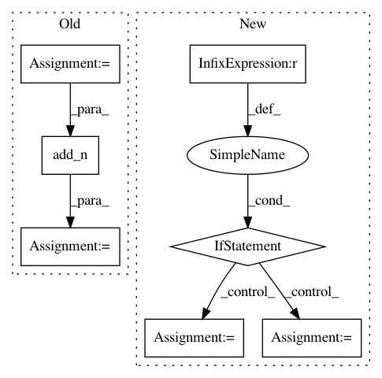

1c51cecde6aba5e6aa61158dd441326da5bb79a4,hypergan/trainers/evolution_trainer.py,EvolutionTrainer,_create,#EvolutionTrainer#,11
Before Change
self.update_parent = update_parent
f_lambda = config.f_lambda or 1
grads = tf.gradients(loss.g_loss, d_vars)
grad_d = tf.add_n([tf.reshape(gan.ops.squash(g), [1]) for g in grads])
fq = loss.g_loss
//TODO measure each g
//self.measure_g = fq + f_lambda * fd
//fd = -tf.log(grad_d - tf.log(tf.nn.sigmoid(loss.d_loss)) - tf.log(1-tf.nn.sigmoid(loss.g_loss)))
After Change
def _squash(grads):
return tf.add_n([tf.reshape(gan.ops.squash(g), [1]) for g in grads])
children_grads = [_squash(tf.gradients(l, d_vars)) for l in loss.children_losses]
if config.fitness == "g":
self.measure_g = [-l for l in loss.children_losses]
else:
self.measure_g = [-l+f_lambda*(-tf.log(TINY+grad_d - tf.log(TINY+tf.nn.sigmoid(loss.d_loss)) - tf.log(TINY+1-tf.nn.sigmoid(l)))) for l, grad_d in zip(loss.children_losses, children_grads)]
loss.metrics["measure_g"] = tf.reduce_mean(self.measure_g)
loss.metrics["g_loss"] = loss.g_loss
loss.metrics["d_loss"] = loss.d_loss
In pattern: SUPERPATTERN
Frequency: 3
Non-data size: 7
Instances
Project Name: HyperGAN/HyperGAN
Commit Name: 1c51cecde6aba5e6aa61158dd441326da5bb79a4
Time: 2018-06-18
Author: martyn@255bits.com
File Name: hypergan/trainers/evolution_trainer.py
Class Name: EvolutionTrainer
Method Name: _create
Project Name: reinforceio/tensorforce
Commit Name: 0e6f7cea4abae753c8e496bbbe6465af6818ad92
Time: 2017-10-28
Author: aok25@cl.cam.ac.uk
File Name: tensorforce/models/distribution_model.py
Class Name: DistributionModel
Method Name: tf_regularization_losses
Project Name: reinforceio/tensorforce
Commit Name: 7deceb39597ea90e0f130448cf3616f0875b7f91
Time: 2017-10-28
Author: aok25@cl.cam.ac.uk
File Name: tensorforce/models/q_naf_model.py
Class Name: QNAFModel
Method Name: tf_regularization_losses